꽃냉장고
꽃냉장고 결로, 생화는 촉촉하게 유리는 맑게 두는 법
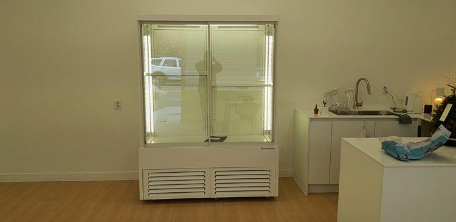
꽃냉장고는 생화와 물통이 계속 수분을 내보내기 때문에 다른 쇼케이스보다 결로가 생기기 쉽고, 무작정 건조하게 만들면 꽃잎이 마릅니다. 습도는 적당히 지키면서 냉기를 꽃에 직접 쏘지 않고 천천히 돌리는 간접 냉각 구조, 배수와 문 관리를 함께 보셔야 합니다.
안녕하세요. 플라워샵의 꽃냉장고를 매장 벽면에 맞춰 설계하는 한성쇼케이스입니다.
꽃집 사장님들은 결로 문제에서 고민이 하나 더 있습니다. 유리가 뿌옇게 흐려지면 손님이 꽃을 못 보니 말려야 하는데, 너무 건조하게 만들면 이번에는 꽃잎 끝이 마르고 갈색으로 변하니까요.
다른 쇼케이스는 결로를 없애는 게 목표라면, 꽃냉장고는 꽃 주변은 촉촉하게, 유리는 맑게라는 두 가지를 동시에 잡아야 합니다.
특히 어버이날이나 졸업 시즌처럼 꽃을 꽉 채워 두는 성수기에는 김서림이 더 심해지죠.
오늘은 꽃냉장고에 결로가 생기는 이유와, 생화 상태를 해치지 않으면서 김서림을 줄이는 방법을 정리해 드리겠습니다.
1. 꽃냉장고에 결로가 잘 생기는 이유
생화는 잘린 뒤에도 잎과 꽃잎으로 계속 수분을 내보냅니다. 여기에 꽃을 꽂아 둔 물통 수십 개가 함께 들어 있으니 내부 습도가 높을 수밖에 없습니다.
이 습한 공기가 차가운 유리를 만나면 안쪽에 물방울이 맺힙니다.
바깥쪽 결로는 매장 쪽 공기가 원인입니다. 꽃집은 물을 많이 쓰고 화분에 물을 주는 일이 잦아 매장 자체가 습한 편이라, 여름 장마철에는 유리 바깥쪽까지 흐려지기 쉽습니다.
그래서 꽃냉장고 결로는 꼭 없애야만 하는 대상이라기보다 정도를 조절해야 하는 현상에 가깝습니다. 유리 아래쪽에 살짝 맺혔다 사라지는 정도라면 꽃에게는 오히려 나쁘지 않은 환경일 수 있고, 손님 시야를 가릴 만큼 넓게 번지거나 물이 흘러내릴 때부터 원인을 찾아보시면 됩니다.
2. 바람을 꽃에 직접 쏘지 않는 구조
결로를 줄이겠다고 바람 세기를 높이면 꽃이 먼저 상합니다. 찬바람이 한 방향으로 계속 닿으면 표면 수분이 빠르게 증발해 가장 얇은 꽃잎 끝부터 마르기 때문입니다.
그래서 꽃냉장고는 찬 공기를 벽면과 덕트를 따라 돌려 간접적으로 식히는 구조가 맞습니다. 선반 뒤나 위에서 천천히 순환시키면 내부 온도 차가 줄어 유리 한쪽에만 물방울이 몰리는 일도 줄어듭니다.
설치 후에는 선반 앞쪽에 손을 대어 바람이 세게 느껴지는 곳이 있는지 확인해 보세요. 그 자리에 둔 꽃이 유독 빨리 시든다면 바람길을 조정할 필요가 있습니다.
- 선반 앞쪽에서 바람이 강하게 느껴지는 지점이 있는지 보세요.
- 천장 송풍구나 에어컨 바람이 유리에 닿지 않는지 확인하세요.
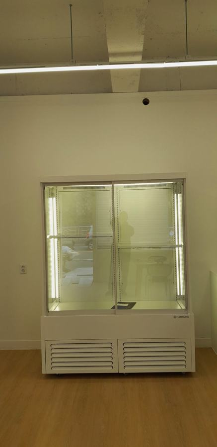
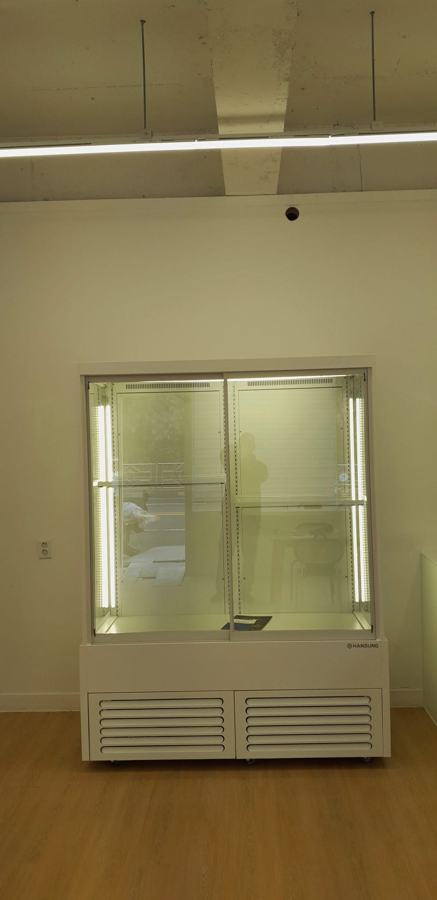
3. 온도와 습도 맞추기
일반적인 생화는 5℃에서 10℃ 사이에서 많이 보관합니다. 결로가 싫다고 온도를 너무 낮추면 꽃잎이 냉해를 입고, 유리와 바깥 공기의 온도 차도 커져 김서림이 오히려 늘어납니다.
열대 식물이나 난류는 더 따뜻하게 둬야 하니 품목별로 칸을 나누는 것도 방법입니다.
습도가 너무 높으면 곰팡이와 세균이 늘기 쉽고, 너무 낮으면 꽃잎 광택이 금방 사라집니다. 필요하면 별도의 가습·제습 장치와 함께 운용하면서 유리 상태와 꽃병 물이 줄어드는 속도를 함께 지켜보세요.
4. 배수와 문 관리
꽃냉장고 바닥에는 물통에서 넘친 물과 꽃잎 부스러기가 계속 쌓입니다. 배수관에 이물질이 막히면 고인 물이 증발하면서 내부 습도가 더 올라가니, 주기적으로 배수관을 청소해 주세요.
꽃다발을 만들 때마다 문을 열어 두는 습관도 결로를 키웁니다. 필요한 꽃을 미리 정해 한 번에 꺼내고 문을 바로 닫아 주시고, 뒷벽까지 통유리로 된 제품이라면 양쪽 유리 상태를 모두 살펴보세요.
체크리스트
- 결로 위치가 안쪽인지 바깥쪽인지
- 간접 냉각 구조와 선반 앞 바람 세기
- 품목별 보관 온도
- 가습·제습 장치 필요 여부
- 배수관 이물질 청소
- 문 여는 횟수와 시간
현장에서 자주 보는 경우: 결로 잡으려다 꽃잎 끝이 마를 때
플라워샵에서는 "바람만 안 맞으면 꽃은 오래 간다"는 말을 자주 합니다. 그런데 매장에 가 보면 진열대 바로 위로 에어컨 찬바람이 떨어지거나, 쇼케이스 안에서도 냉기가 꽃에 직접 부딪히는 구조여서 꽃잎 끝이 마르고 금세 축 늘어지는 경우를 자주 봅니다.
이럴 때는 냉기를 벽면과 덕트로 돌려 진열 공간 전체를 부드럽게 식히고, 바람 세기를 과하게 올리지 않도록 설정을 바꿔 드립니다.
설치 뒤에도 유리 결로, 선반 앞 바람 세기, 꽃병 물이 줄어드는 속도를 함께 관찰하면서 세부 설정을 조정하시라고 안내합니다.
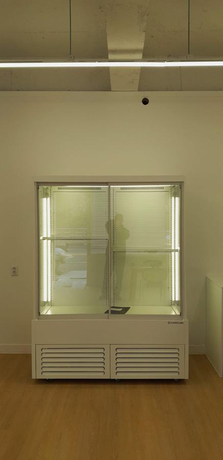
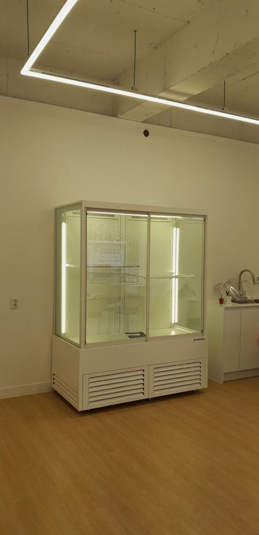
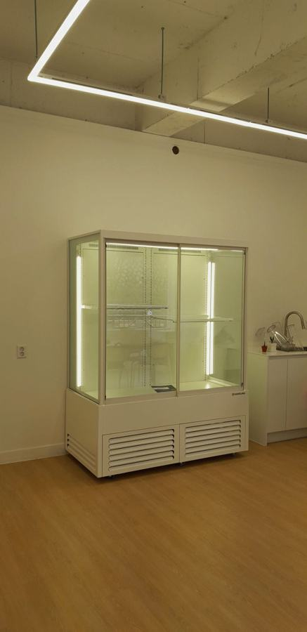
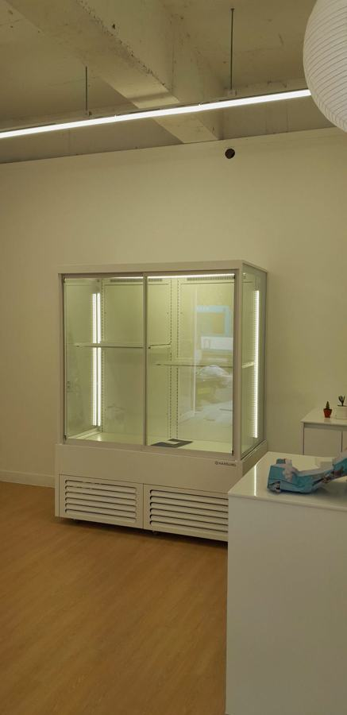
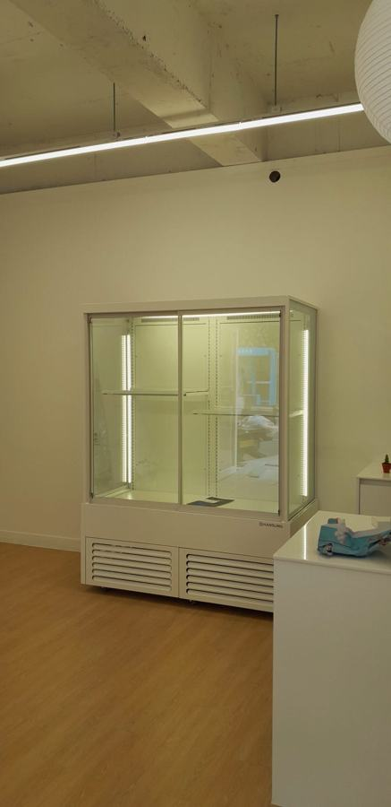
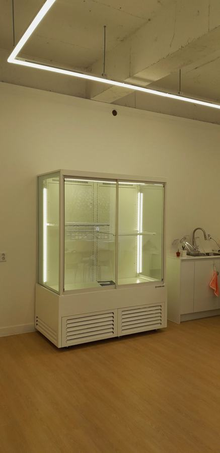
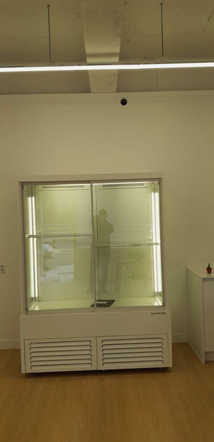
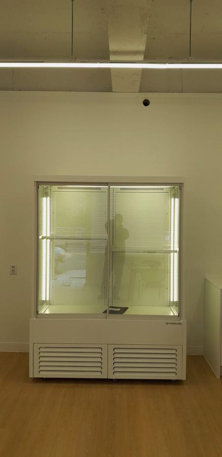
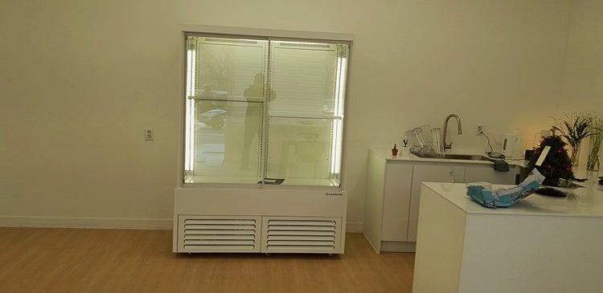

자주 묻는 질문
꽃냉장고 안쪽에 물방울이 맺히는 건 정상인가요?
생화와 물통이 수분을 내보내기 때문에 어느 정도는 생길 수 있습니다. 다만 물방울이 흘러내릴 정도라면 배수 막힘, 문 개방 시간, 바람길을 점검해 보세요.
결로를 줄이려고 온도를 더 낮춰도 될까요?
권하지 않습니다. 온도를 낮추면 유리와 바깥 공기의 차이가 커져 김서림이 늘 수 있고, 꽃잎이 냉해를 입을 수 있습니다.
새로 맞출 때 결로를 줄이려면 무엇을 알려 드려야 하나요?
매장 습도가 높은 편인지, 에어컨과 송풍구 위치, 주로 보관할 꽃 종류를 알려 주세요. 그에 맞춰 간접 냉각 구조와 유리, 배수 구성을 함께 안내해 드립니다.
매장 조건에 맞춰 만드는 한성쇼케이스
원하시는 제품 사진과 설치할 공간 사진만 보내 주셔도 매장에 맞는 구성을 추천해 드립니다.
- 전국 240여 개 A/S 전담 센터 운영
- 본사 대량 자재 매입으로 품질 대비 합리적인 가격
- 유럽제·삼성 냉각 콤프레셔 적용
- 국내 최초 쇼케이스 전문 디자이너 상주
매장 폭과 원하는 진열 구성을 알려 주세요. 실측과 견적을 안내해 드립니다.
031-986-2458